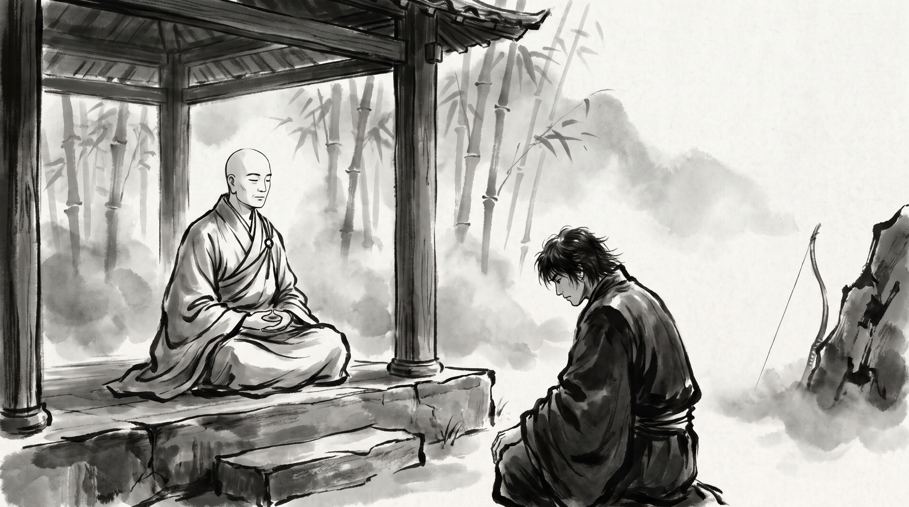

The Poisoned Arrow: Why Idle Debate Must Wait While the Wound Bleeds

The morning mist drifted through the bamboo grove, trailing thin white veils across the stone flags of the monastery terrace. Karthik, a chief wagon-master who directed the caravan supply lines for the northern merchant guild, sat upon the granite bench with shoulders hunched and fists pressed hard against his knees. The dark hollows beneath his eyes spoke of two sleepless nights on the mountain road, but the tremor in his voice was born of frustration rather than fatigue.
Across the low stone tea table sat the Monk, draped in coarse ochre robes, his shaven head tilted in quiet attention. He poured hot spring water over fresh mint leaves, offering the steeping bowl without a word.
"Yesterday morning, our primary caravan supply route collapsed," Karthik began, his voice taut. "A sudden unseasonal blizzard iced the high mountain pass, three central baggage trains ground to a halt in the snowdrifts, and grain and fresh provisions began spoiling across six valley outposts. Our guild's rule for such a storm is plain: open the regional valley granaries, release reserve oxen and pack mules, and reroute the baggage trains along the lower southern river roads before midday."
Karthik swallowed, staring bitterly into the swirling leaves. "Yet the moment I assembled the merchant council, our chief counselor halted every order. For half the day, while caravan drivers froze in the mountain winds and outpost keepers pleaded for reserve grain, he forced the council elders to debate whether our foundational trade charter was philosophically flawed, who had authorized the consolidation of the mountain waystations two seasons ago, and whether opening the reserve granaries would upset our yearly trade dues to the kingdom. By dusk, mountain waystations had been abandoned, merchants had cancelled their pacts, and our guild suffered catastrophic losses. The crisis could have been contained before the morning meal, yet our caravans perished while clever men debated theory. How does one silence the pedants who refuse to stop arguing while the house burns?"
The Wounded Soldier and the Curious Philosopher
The Monk set his tea bowl down upon the slate, listening to the creak of bamboo in the mountain wind.
"Your grief is sharp, Karthik, but the vanity that prefers debate over salvation is an ancient human frailty. In the days of the Blessed One, among the disciples who followed the Blessed One, there lived a monk named Malunkyaputta. He was an earnest student, yet his mind was perpetually seduced by abstract speculation."
The Monk gathered his robe and continued. "One afternoon, while meditating in solitude, Malunkyaputta became possessed by resentment. He said to himself: 'There are profound cosmic questions that the Master has refused to settle. Is the universe eternal or transient? Is the cosmos finite or infinite? Is the soul identical with the physical body, or are they distinct? Does an enlightened one exist after death, or does he vanish entirely? The Master leaves these matters unexplained. I shall confront him. If he resolves these questions, I will remain. If he refuses, I will cast off these robes and depart.'"
"Malunkyaputta approached the Teacher, bowed, and laid down his aggressive ultimatum. The Buddha looked upon him not with anger, but with sorrow for a man who had confused cleverness with wisdom."
"'Malunkyaputta,' the Buddha replied, 'suppose a man were pierced deep in the flesh by an arrow thickly smeared with virulent poison. His kin and companions rush to his side and summon a skilled surgeon to draw out the barb.'"
"'Now imagine that the wounded man pushes the physician's hands away and declares: I will not permit this arrow to be removed until I know the man who shot me. What is his caste? What is his clan? Is he tall, short, or of middling stature? Is his skin dark, golden, or fair? Which village does he inhabit? And I will not have this barb extracted until I know the nature of the bow—was it fashioned from mountain reed or seasoned ash wood? Was the bowstring braided from sinew, hemp, or bark? Were the feathers bound to the shaft plucked from a vulture, a peacock, or an eagle? Was the point forged of common iron or tempered steel?' What would happen to such a man, Malunkyaputta?"
"The monk replied in shame: 'Master, he would die before a single answer could be brought to him.'"
"'Just so,' the Buddha answered. 'The holy life does not depend on whether the cosmos is eternal or finite. Whether the world had a beginning or not, there remains birth, aging, illness, death, sorrow, and despair. I teach what is essential to relieve suffering here and now. What is speculative and unhelpful to your survival, I leave aside.'"
What the Arrow Teaches
The Monk turned to Karthik, his eyes steady.
"When disaster strikes a guild, Karthik, the clever debate is rarely a search for truth. It is a hiding place. Drawing the arrow takes courage: there is blood, there is pain, and the healer must carry the blame if the wounded man dies under his hands. But asking which bird gave the feathers costs nothing. It sounds learned. It lets a frightened official look wise without ever risking the shame of a wrong order."
"See how the council turns upside down in a crisis," the Monk went on. "The wagon-master who proposes a rough, imperfect remedy is scolded for carelessness, while the man who calls for a full inquiry into the charter appears thoughtful and prudent. In truth, the one who delays is the one who kills. He demands certainty at the very hour when only swift hands can save lives."
"There are three faces of this vanity. The first asks who is to blame while the frost is still killing the oxen. The second asks what the charter says when the charter never imagined this storm. The third asks what the king will think of the quotas, as though the king would rather have fine accounts than living drivers. All three are the wounded man pushing the healer's hand away."
The Monk's Counsel: Draw the Arrow First
"If you are to lead your caravans through a storm without bleeding to death," said the Monk, "you must draw a hard line between the hour of rescue and the hour of inquiry."
1. Pull Out the Arrow Before Anything Else
When the losses begin, declare one rule to the council in plain words: no talk of causes, blame, or the charter until the bleeding stops. Name the single act that stops the loss — open the valley granaries, send the reserve mules, turn the trains to the river road — and give the order yourself, without waiting for every elder to agree. In a crisis the question is never "Why did this happen?" The only question is "What stops the wound from deepening before the sun moves again?"
2. Send the Debaters to the Back of the Tent
Learn which men on your council reach for fine arguments when the pressure rises. When one of them tries to stall the rescue with questions about old decisions, stop him at once, politely and firmly: "That question belongs to the inquiry. Today we save the caravans." Do not argue with his point; arguing gives his distraction weight. Give him a task far from the orders, such as counting the stores, or ask him to wait outside the command tent until the danger has passed.
3. The Inquiry Belongs to the Living
A full inquiry into the waystations, the suppliers, and the old charter is needed, but only once the wounded man is resting and out of danger. Set the inquiry for the third day after the storm, and announce that day while the rescue is still under way, so the debaters know their hour will come. At that table, examine the bowstring, inspect the feathers, and question every contract with full rigour. But remember: an inquiry held over a dead guild is of no use to the families who depended on it.
Source: Majjhima Nikaya, Sutta 63 (Cula-Malunkyovada Sutta)
Karthik set down the bowl of mint water. For the first time in two days his hands were still. He rose, bowed to the Monk, and started back down the mountain road toward the council tent.
"When the house is burning, the man who demands to know the lineage of the one who lit it will choke on the ash. Put out the flame first; the court of inquiry can sit in daylight once the embers are cold."